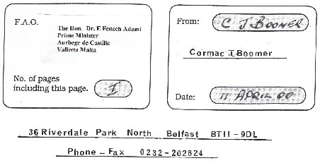

M E S S A G E
Dear Dr Adami
Subject - Aviation Incident Missing Aircraft
Piper 9H-ABU 3 rd December 1995
Dear Dr, Adami
The Board of Inquiry has recently published its report into the above incident but there many questions that were left unanswered. While much time has passed it would be appreciated if the Libyan authorities could be of help, especially since despite the conclusions of the Board of Inquiry an Aviation expert testified in Court that no trace or evidence of any human residue was found on the debris. This is not the case in any similar aviation incidents there is also the matter of the Cospass Satellite signal which to date remains to date unexplained.
My son Desmond was reported to be a passenger on this aircraft, yet there has never been proof of any kind to sustain this claim or for that matter that the plane actually left Djerba on the morning of 3rd December 95. While recognising that you will have a busy schedule I would respectfully ask for your help and assistance in this matter by raising it with the with the Libyan authorities
Cormac J Boomer
36 Riverdale Park North
Belfast BT11 9DL
Northern Ireland (UK)